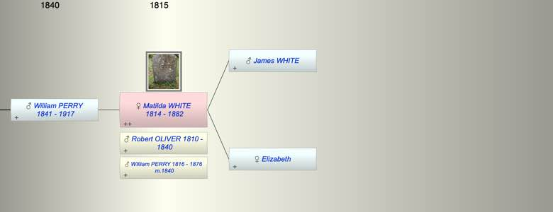
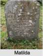

| [Index] |
| Matilda WHITE (1814 - 1882) |
|  |
|  |
| b. 1814 at Scotland |
| +. (1) Robert OLIVER (1810 - 1840) |
| m. (2) 03 Dec 1840 WIlliam PERRY (1816 - 1876) at Kelly Devon |
| d. 26 Jul 1882 at Kelly Devon aged 68 |
| Near Relatives of Matilda WHITE (1814 - 1882) | ||||||
| Relationship | Person | Born | Birth Place | Died | Death Place | Age |
| Father | James WHITE | |||||
| Mother | Elizabeth | |||||
| Self | Matilda WHITE | 1814 | Scotland | 26 Jul 1882 | Kelly Devon | 68 |
| Spouse/Partner | Robert OLIVER | abt 1810 | bef 1840 | 30 | ||
| Husband | WIlliam PERRY | 1816 | 27 Jan 1876 | Kelly Devon | 60 | |
| Son | William PERRY | 1841 | Kelly Devon | 1917 | Ontario Canada | 76 |
| Daughter in Law | Emma YOULDEN | 1843 | Kelly Devon | |||
| Grandson | Henry PERRY | 1865 | Thurleston | 1923 | Plymouth | 58 |
| Events in Matilda WHITE (1814 - 1882)'s life | |||||
| Date | Age | Event | Place | Notes | Src |
| 1814 | Matilda WHITE was born | Scotland | ex 1851 census | ||
| bef 1840 | 26 | Death of husband Robert OLIVER (aged 30) | |||
| 03 Dec 1840 | 26 | Married WIlliam PERRY (aged 24) | Kelly Devon | Note 1 | |
| 1841 | 27 | Birth of son William PERRY | Kelly Devon | ||
| 27 Jan 1876 | 62 | Death of husband WIlliam PERRY (aged 60) | Kelly Devon | aged 59 ex Find a grave | |
| 26 Jul 1882 | 68 | Matilda WHITE died | Kelly Devon | Note 2 | |
| Personal Notes: |
| bap a not found |
| Created on a Mac™ using iFamily for Mac™ on 12 Sep 2023 |